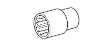
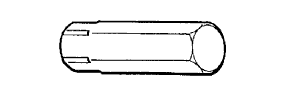
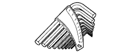
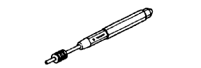

ГОЛОВКА БЛОКА ЦИЛИНДРОВ > ПРОВЕРКА > Подготовка

| Фирменный герметик Seal Packing Black от компании Тойота, Three bond 1207B или аналогичный | - |
| Фирменный герметик 1324 от компании Тойота, Three Bond 1324 или аналогичный | - |
| Фирменный герметик от компании Тойота, Three Bond 1344 или аналогичный | - |
| Стержень 3 мм (0,118 дюйма) | - |
| Латунный стержень | - |
| Кольцо с разрывом | - |
| Щетка | - |
| Индикатор часового типа для отверстий | - |
| Таль | - |
| Компрессометр | - |
| Компаунд | - |
| Контейнер | - |
| Нутромер | - |
| Датчик СО/CH | - |
| Индикатор часового типа | - |
| Индикатор часового типа с магнитной подставкой | - |
| Жидкость с красителем | - |
| Стенд для двигателя | - |
| Инструмент для очистки канавок | - |
| Нагреватель | - |
| Нож | - |
| Универсальная консистентная смазка | - |
| Микрометр | - |
| Метка, нанесенная краской | - |
| Защитная клейкая лента | - |
| Берлинская лазурь | - |
| Сминаемый пластмассовый калибр Plastigage | - |
| Съемник поршневых колец | - |
| Пластмассовый молоток | - |
| Пресс | - |
| Устройство для шлифовки отверстий малого диаметра | - |
| Оправка поршневых колец | - |
| Трос | - |
| Кусок резины | - |
| Инструмент для снятия уступа | - |
| Устройство для проверки кривизны шатуна | - |
| Наждачная бумага (№400) | - |
| Острая развертка (5,5 мм) | - |
| Пружинный динамометр | - |
| Поверочная линейка | - |
| Стальной угольник | - |
| Растворитель | - |
| Стробоскоп | - |
| Тахометр | - |
| Динамометрический ключ | - |
| Устройство для расточки седел клапанов (30°, 45°, 60°) | - |
| Штангенциркуль | - |
| Съемник поршневых колец | - |
| Виниловая лента | - |
| V-образная призма | - |
| Деревянный брусок | - |
 | 09010-3C100 | Комплект торцевых шестигранных головок | - |
| 09010-3C110 | Комплект торцевых шестигранных головок | - | |
 | (09013-6C100) | Торцевой шестигранный ключ 5 мм | - |
 | (09013-6C120) | Торцевая шестигранная головка 8 мм | - |
| (09013-6C130) | Торцевой шестигранный ключ 10 мм | - |
|  | 09011-1C500 | Торцевая головка 12 мм | - |
| 09011-2C570 | Торцевой ключ 27 мм | - | |
| 09013-1C500 | Торцевая головка "TORX" E5 Е-типа | - | |
| 09013-1C510 | Торцевая головка "TORX" E6 Е-типа | - | |
| 09013-1C520 | Торцевая головка "TORX" E7 Е-типа | - | |
| 09013-1C530 | Торцевая головка "TORX" E8 Е-типа | - | |
|  | 09013-7C120 | Прямая шестигранная головка 14 мм | - |
| 09013-7C140 | Прямая шестигранная головка 19 мм | - | |
|  | 09013-7C400 | Набор ключей | - |
|  | 09051-1C410 | Бородок с тонким цилиндрическим концом 5 | - |
 | 09061-1C110 | Инструмент для снятия фиксаторов 10 мм | - |
| 09090-04020 | Стропы для подъема двигателя | - |